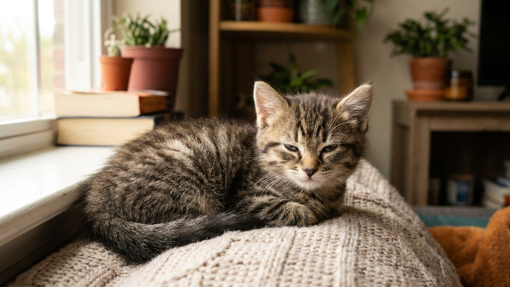

Первая ночь с новым котёнком — это часто несколько часов крика из темноты и острое желание просто взять его в постель. Этот порыв понятен. Только вот если взять — на следующий вечер всё повторится с удвоенной силой, и уже как требование. За три дня можно выстроить режим, при котором котёнок перестаёт кричать ночью — без жёсткости, без игнорирования, и без переселения его на подушку.
🐾 Питомец ведёт себя странно?
AnimaLife расшифрует поведение кошки и собаки и подскажет, что делать. Попробуйте бесплатно прямо в мессенджере.
Котёнок в возрасте 8–12 недель до недавнего времени был частью тёплой, живой, пахнущей кошкой кучи — братья, сёстры, мама. Он никогда в жизни не был один. И вдруг — незнакомое место, незнакомые запахи, тишина, и никого рядом.
Крик в этой ситуации — не манипуляция. Это эволюционно закреплённый сигнал разлучения: «Я один, я маленький, я потерялся». В дикой природе мать реагирует на него мгновенно. Проблема в том, что если хозяин каждый раз прибегает на крик — котёнок закрепляет: «крик работает». И будет звать снова.
Задача первых трёх ночей — не заставить котёнка страдать в одиночестве, а создать среду, в которой ему не нужно кричать, потому что базовые потребности закрыты без вашего прихода.
Большинство проблем первой ночи решается подготовкой в тот же день, когда котёнка привезли.
Концепция переходного объекта хорошо изучена в детской психологии и применима к котятам. Объект с запахом «своих» снижает уровень кортизола (гормона стресса) и запускает ощущение безопасности даже в отсутствие живого существа.
На практике это означает: котёнок может успокоиться и заснуть рядом с пахнущей тканью так же, как рядом с живой кошкой. Не идеально, но работает — и работает быстро.
Идеальный вариант — попросить заводчика за несколько дней до передачи котёнка потереть кусок ткани об маму-кошку и братьев-сестёр. Это стоит запланировать заранее.
Совместный сон с кошкой — это нормально, если вы осознанно этого хотите и вам это подходит. Многие хозяева спят с кошкой всю её жизнь без каких-либо проблем.
Проблема только в одном: если вы взяли котёнка в постель в первую ночь из жалости, а через месяц хотите его оттуда убрать — это будет значительно тяжелее, чем установить правило с первого дня. Котёнок уже закрепил: «ночью я сплю с хозяином». Переучивание занимает 1–3 недели и требует той же последовательности, которую легко было применить с первой ночи.
Решите это до того, как привезёте котёнка — и придерживайтесь решения.
К третьей ночи, если первые две прошли по описанной схеме, большинство котят уже значительно спокойнее. Помогает выстроить чёткий вечерний ритуал — одна и та же последовательность действий перед сном.
Ритуал работает как якорь: котёнок начинает понимать, что это последовательность означает «сейчас будем спать». Предсказуемость снижает тревогу.
Первые 2–3 дня — нормальное время для адаптационного крика. Если к концу третьей ночи котёнок кричит так же интенсивно или сильнее, и при этом:
— это повод обратиться к ветеринару. Плач может быть не адаптационным, а сигналом дискомфорта. Котята очень маленькие и быстро меняются — лучше перестраховаться.
🐾 Здоровье питомца под контролем
AI-ветеринар, дневник здоровья и персональные советы для вашего питомца — установите AnimaLife бесплатно.
Три дня последовательности — и у котёнка появляется первый ритм безопасности в новом доме.
Материал носит информационный характер и не заменяет очную консультацию ветеринара.